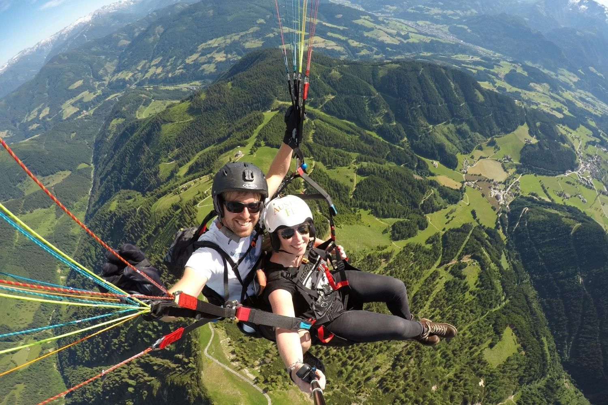

PARAGLIDING
- Bir Billing (Himachal Pradesh)

Bir Billing in Himachal Pradesh is a world-renowned paragliding destination, offering thrilling flights with stunning views of the Dhauladhar Range and Kangra Valley.
The take-off point is Billing, and the landing site is Bir, with ideal weather conditions for flying from March to June and September to November.
Tandem paragliding flights last 15-30 minutes and cost between ₹2,500 to ₹5,000 ($30-$60). For those interested in learning, paragliding schools offer training and certification.
Bir Billing is also known for its adventure sports, including trekking and camping, making it a must-visit for outdoor enthusiasts. - Kamshet (Maharashtra)

Kamshet, located in Maharashtra, is a popular yet relatively quieter paragliding destination, around 110 km from Mumbai.
Known for its ideal flying conditions, it offers stunning views of rolling hills, lakes, and villages. Paragliding here is suitable for both beginners and experienced pilots.
The best time to visit is from October to May. The cost of tandem paragliding in Kamshet ranges from ₹2,500 to ₹5,000 ($30-$60) for a 15-30 minute flight, depending on the operator and season.
Training courses for beginners typically range from ₹10,000 to ₹20,000 for a few days of instruction. - Nandi Hills (Karnataka)

Nandi Hills, located near Bangalore in Karnataka, offers a serene and thrilling paragliding experience.
Known for its gentle winds and stunning views of the surrounding hills, valleys, and forests, it is an ideal spot for both beginners and experienced pilots.
The take-off point is located at the hilltop, providing panoramic views of the countryside. The best time to visit for paragliding is from October to March.
Tandem paragliding flights in Nandi Hills typically cost around ₹2,500 to ₹4,000 ($30-$50) for a 15-20 minute flight, with training courses available for those looking to learn the sport. - Pondicherry (Tamilnadu)

Pondicherry offers a unique paragliding experience, with the opportunity to fly over beautiful beaches and the scenic coastline.
The gentle sea breezes and stunning views of the Bay of Bengal make it an ideal destination for adventure seekers.
Paragliding in Pondicherry typically takes place at Paradise Beach or Serenity Beach, offering both tandem flights for beginners and training options for those looking to learn.
The best time to visit for paragliding is from October to March. Tandem flights usually cost between ₹3,000 to ₹5,000 ($35-$60) for a 15-20 minute flight, depending on the operator.